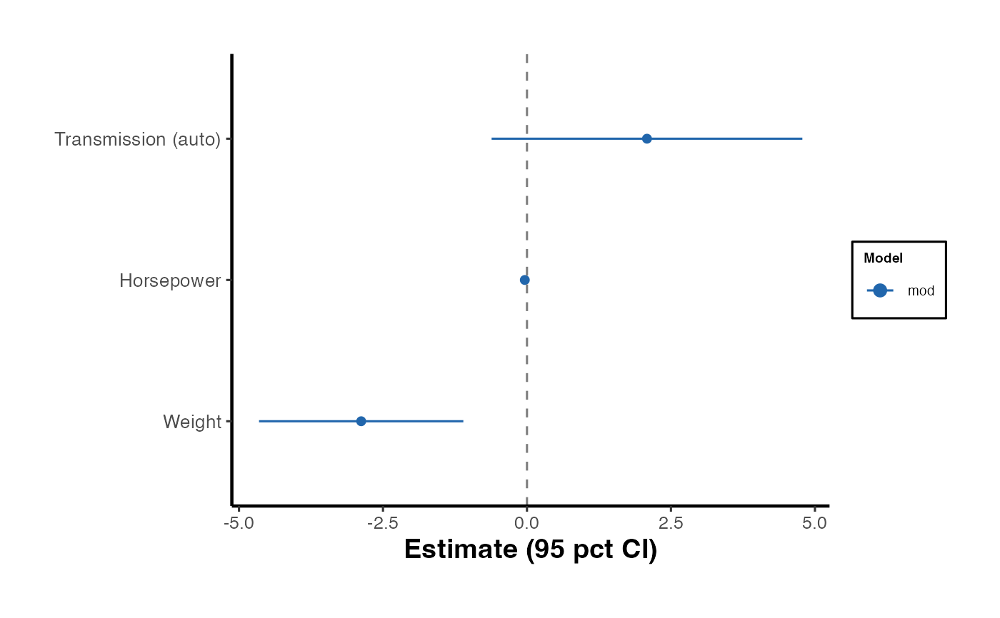

coef_plot.RdCreates a publication-ready coefficient (forest) plot from any model or
list of models. Supports lm, glm, fixest,
ivreg, and tidy data frames.
A model object, a named list of model objects, or a tidy
data frame with columns term, estimate, conf.low,
conf.high (broom-style) or ci_lower, ci_upper
(causalverse-style).
Character vector. Terms to include. If NULL (default),
all non-intercept terms are shown.
Named character vector mapping original term names to
display labels, e.g. c(am = "Transmission (auto)").
Character vector. Display names for each model, used in
the legend. Defaults to list element names or "Model".
Character. Sort terms by "estimate" (default),
"name", or "none".
Logical. Add a vertical reference line at zero.
Default TRUE.
Character. Color points by "model" (default) or
"significance" (significant at 5 percent in a different color).
Numeric. Confidence level for intervals extracted from
model objects. Default 0.95.
Numeric. Horizontal offset between multiple models.
Default 0.4.
Character or NULL. Plot title.
Character. X-axis label. Default "Estimate (95 pct CI)".
A ggplot2 object.
# Single lm model
mod <- lm(mpg ~ am + wt + hp, data = mtcars)
coef_plot(mod, terms = c("am", "wt", "hp"),
term_labels = c(am = "Transmission (auto)",
wt = "Weight", hp = "Horsepower"))

if (FALSE) { # \dontrun{
# Multiple models
mod2 <- lm(mpg ~ am + wt + hp + disp, data = mtcars)
coef_plot(
list(Parsimonious = mod, Full = mod2),
terms = c("am", "wt", "hp"),
color_by = "significance"
)
} # }